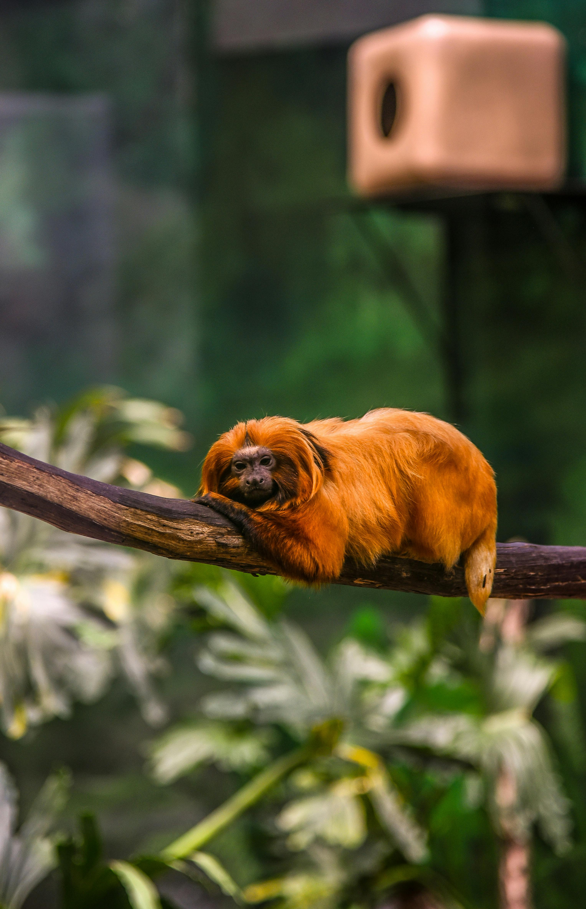

About this Website
Golden Lion Tamarin by Pexels
Digital Marketing Student Giovanna Boito is concerned about the species Golden Lion Tamarin and its possible extiction. The species, just like the student, is originally from Brazil and it's a national symbol of hope and how important it is to save the forests. Although a lot of progress was made since the 1970s, keeping the progress and the species population growing is important to keep the Golden Lion Tamarins alive.